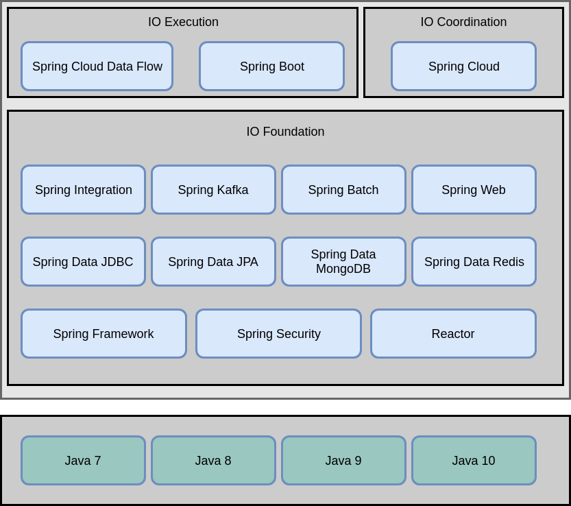
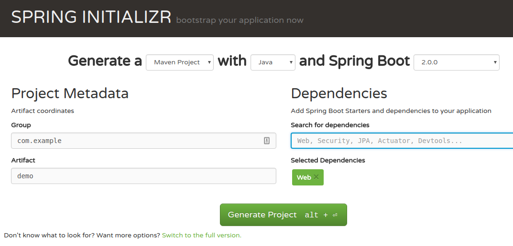
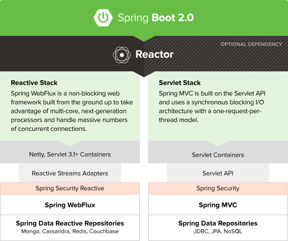

Spring Basics Training
https://andifalk.github.io/
spring-basics-training/ presentation/index.html
Andreas Falk
NovaTec Consulting GmbH
andreas.falk@novatec-gmbh.de@NT_AQE, @andifalk

A little bit of history
2002
Rod Johnson had an idea and wrote a book:
“J2EE Design & Development”
First source code available
2004
Published Spring 1.0
Java 1.3 & 1.4 compatible
2006-2009
Spring 2.x
Java 5 & 6 compatible
Java EE 5 compliant
2009-2013
Spring 3.x
Java 6 & 7 compatible
Java EE 6 compliant
Rod Johnson leaves Sping
Founded Pivotal
2014-2017
Spring 4.x
Java 7 & 8 compatible
Java EE 6 & 7 compliant
Published Spring Boot 1.0 (2014)
2018, 2019, ...
Spring 5.x
Spring Boot 2.0
Java 8+ compatible
Java EE 7+ compliant
Spring Overview
Spring IO Platform
Spring IO Platform
“Production-Ready” platform
Certified for Java 7, Java 8 & Java 9
Tested for 3rd party dependencies
https://platform.spring.io/platform
Spring IO Platform
Maven BOM
io.spring.platform
platform-bom
Brussels-SR7
pom
import
Spring Boot
Spring Auto-Configuration
“Convention over Configuration”
https://projects.spring.io/spring-boot
Spring Boot
Build a working Spring App in 5 minutes
https://start.spring.io
Spring Cloud Data Flow
Successor of Spring XD
Toolkit for building data integration and real-time data processing pipelines
Pipelines consist of Spring Boot apps
https://start.spring.io
Spring Cloud
Patterns for Cloud-Native Applications
Configuration management
Service discovery
Circuit breakers
https://projects.spring.io/spring-cloud
Spring Integration
Implementation of well-known Enterprise Integration Patterns (EAI)
Integration with External Systems
ReST/HTTP, Twitter, EMail, JMS, FTP, ...
https://projects.spring.io/spring-integration
Spring Integration
Enterprise Integration Patterns (EAI)
Spring Kafka
Developing Kafka-based messaging solutions
Add Kafka support to Spring Integration
https://projects.spring.io/spring-kafka
Spring Batch
Developing batch processing applications
Chunk based processing
Start/Stop/Restart
Retry/Skip
https://projects.spring.io/spring-batch
Spring Web
Servlet-based Web (Spring MVC)
Reactive Web (Spring WebFlux)
Restful services
Thymeleaf, JSF, Tapestry, ...
https://projects.spring.io/spring-framework
Spring Web Stacks

Spring Data
Spring Data JDBC
JDBC based repositories
This is NOT an ORM
Support for @Query annotations
https://projects.spring.io/spring-data-jdbc
Spring Data JPA
Enhanced support for JPA based data access layers
Supports Hibernate, EclipseLink as JPA providers
Pagination support, dynamic query execution
https://projects.spring.io/spring-data-jpa
Spring Data JPA
Autmatic Database Migrations

https://flywaydb.org
https://www.liquibase.org
Spring Data MongoDB
Data access for MongoDB document database
Mongo Template support
POJO centric model for interacting with a MongoDB DBCollection
https://start.spring.io
Spring Data Redis
Redis Template support
Repository for key/value store
https://projects.spring.io/spring-data-redis
Spring Framework
Core spring functionality
Application context & Beans
Dependency Injection
https://projects.spring.io/spring-framework
Spring Framework
Version 3.2.x
“Legacy”
Supports Java 6 / 7
EOL: End of 2016
https://spring.io/blog/2015/06/15/spring-framework-3-2-x-eol-on-dec-31-2016
Spring Framework
Version 4.3.x
Long term version
Supports Java 6 / 7 / 8
EOL: 2020
https://github.com/spring-projects/spring-framework/wiki
Spring Framework
Version 5.0
Current version
Supports Java 8 / 9 / 10+
https://github.com/spring-projects/spring-framework/wiki
Spring Security
Authentication
SSO (OAuth2, OpenID Connect)
Authorization
Encryption
https://projects.spring.io/spring-security
Reactor
Reactive library for building non-blocking applications
Based on Reactive Streams Specification
https://projectreactor.io
https://www.reactive-streams.org